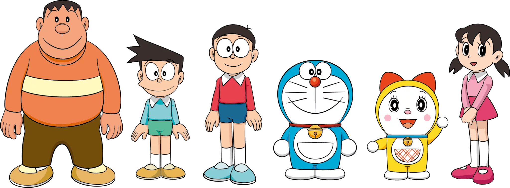
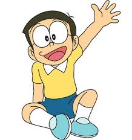
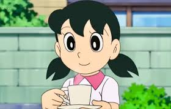
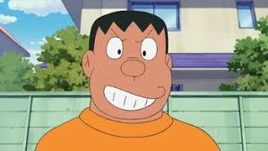
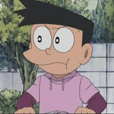

Un viaje desde el siglo XXII para cambiar el destino de Nobita

Doraemon es un gato robot fabricado el 3 de septiembre de 2112 en la Fábrica de Robots Matsushiba. Originalmente era de color amarillo y tenía orejas, pero tras un incidente donde un ratón robótico se las comió, se tornó azul debido a la tristeza.
Fue enviado al pasado por Sewashi, el tataranieto de Nobita, para ayudar a su antepasado a ser una mejor persona y evitar que su familia viviera en la pobreza por las malas decisiones de Nobita.
Haz clic en cada uno para saber su rol:



